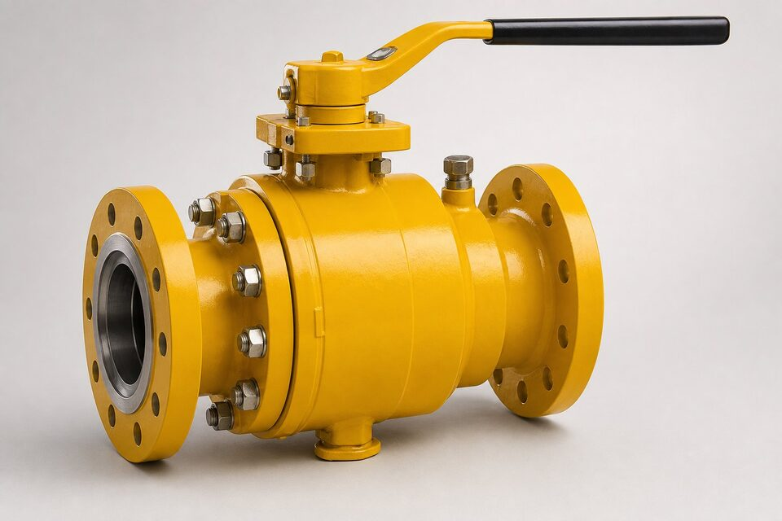

ماهیت سرویس گاز
گاز طبیعی و گازهای فرایندی، سیالاتی فرار و قابل اشتعال هستند. نشتی آنها نه فقط اتلاف محصول، بلکه ریسک ایمنی است. بنابراین شیرهای این سرویس باید در دو نقطه نشیمنگاه و ساقه، آببندی سختگیرانه داشته باشند و در بسیاری موارد طراحی فایرسیف و قابلیت قطع اضطراری نیز الزامی است.

انواع مناسب
| نوع | کاربرد در خط گاز | مزیت |
|---|---|---|
| توپی تمامعبور | قطع اصلی و پیگرو | آببندی عالی و قطع سریع |
| دروازهای | نقاط خاص قطع | افت فشار کم |
| یکطرفه | جلوگیری از برگشت | حفاظت تجهیزات |
| کنترل | تنظیم فشار و دبی | در نقاط کنترلی |
الزامات ایمنی
- کلاس نشتی سختگیرانه برای نشیمنگاه.
- آببندی ساقه با پکینگ مناسب و کنترل نشت فرار.
- طراحی فایرسیف در خطوط هیدروکربنی.
- قابلیت قطع اضطراری در نقاط حساس.
- هماهنگی با سیستمهای ایمنی و ابزار دقیق خط.
استانداردهای حاکم
مرجع شیرهای خطوط انتقال، الزامات اصلی این سرویس را پوشش میدهد و استانداردهای تست، معیارهای نشتی و فایرسیف را تعریف میکنند. در پروژههای داخلی، مشخصه شرکتهای بزرگ نیز الزامات تکمیلی دارد که در استعلام باید لحاظ شود.
نکات استعلام
- کلاس نشتی مطلوب را صریح ذکر کنید.
- الزام فایرسیف را مشخص کنید.
- نوع عملگر و سناریوی قطع اضطراری را بنویسید.
- متریال متناسب با سیال انتخاب کنید.
- مدارک تست و گواهی مواد را درخواست کنید.
قابلیتهای پیشرفته
- آببندی دوبل و تخلیه حفره میانی برای تست و اطمینان.
- تزریق چربی اضطراری نشیمنگاه در برخی طرحها.
- قفل و نشانگر وضعیت برای نقاط حساس.
- هماهنگی با سیستم قطع اضطراری خط.
نگهداری در سرویس گاز
- پایش مستمر نشتی با روشهای مناسب گاز.
- عملکرد دورهای شیرهای کمکار.
- بازرسی نشیمنگاه و ساقه در اورهال.
- کنترل وضعیت عملگرها و سیستمهای قطع اضطراری.
یک نکته بازرگانی مهم: هنگام استعلام شیر خط گاز، عبارت «مناسب گاز» کافی نیست؛ کلاس نشتی، فایرسیف و نوع عملگر باید صریح ذکر شود تا پیشنهادهای دریافتی قابل مقایسه باشند.
تست نشتی و معیارهای پذیرش در سرویس گاز
در سرویس گاز، تست نشتی اهمیت دوچندانی دارد، چون گاز برخلاف مایع، نشتیهای ریز را هم به سرعت آشکار نمیکند و پیامدهای تجمع آن میتواند جدی باشد؛ بنابراین معیارهای تست باید متناسب همین واقعیت تعریف شوند. تستهای اصلی شامل تست بدنه با فشار مایع مطابق استانداردهای ساخت و تست نشیمن است؛ اما در سرویسهای گازی حساس، بسیاری از کارفرمایان یک تست تکمیلی با گاز نیز تعریف میکنند، چون رفتار نشتی گاز با مایع متفاوت است و برخی نشتیها فقط با گاز آشکار میشوند. تست با گاز باید با تمهیدات ایمنی مناسب و فشار کنترلشده انجام شود؛ انرژی ذخیرهشده در گاز فشرده، در صورت آزاد شدن ناگهانی خطرناک است و این تفاوت اصلی با تست مایع است. روشهای شناسایی نشتی متناسب حساسیت مورد نیاز انتخاب میشوند: از محلول کفساز برای اتصالات ساده تا آشکارسازهای گاز یا تستهای افت فشار دقیق برای سیستمهای حساس. معیارهای پذیرش باید قبل از تست مشخص باشند؛ آیا نشتی صفر مرئی ملاک است یا میزان افت فشار در زمان مشخص؟ این معیارها باید در برگه مشخصات ذکر و در گزارش تست ثبت شوند. نکته مهم دیگر، شرایط تست تحویل است؛ اگر شیر یا تجهیز در کارخانه تست شده باشد، حمل و جابجایی میتواند آسیب ایجاد کند و بسیاری از پروژهها، تست مجدد پس از نصب را برای نقاط حساس الزامی میدانند. در خطوط گاز، تست کل خط پس از نصب نیز باید متناسب استانداردهای مربوطه و با فشار متناسب انجام شود و همه اتصالات در طول تست قابل بازرسی باشند. در مستندسازی، گزارش هر تست باید فشار، محیط تست، مدت زمان، معیار پذیرش و نتیجه را شامل شود و به شماره تجهیز گره بخورد. این مدارک، هم مرجع بهرهبرداری آیندهاند و هم در صورت بروز حادثه، نشان میدهند که الزامات ایمنی رعایت شده است. در نهایت، تست نشتی یک نقطه پایان نیست؛ پایش دورهای با آشکارسازهای گاز نیز بخشی از برنامه ایمنی خطوط گازی است.
جمعبندی
شیرهای خطوط گاز، اجزای ایمنی هستند نه فقط اجزای قطع. با تعیین دقیق الزامات نشتی و فایرسیف، از ایمنی خط مطمئن شوید.
سوالات رایج
چرا الزامات نشتی در سرویس گاز سختگیرانهتر است؟
گاز سیالی فرار و قابل اشتعال است و نشتی کوچک آن میتواند در فضای بسته به غلظت خطرناک برسد. به همین دلیل کلاس نشتی نشیمنگاه و آببندی ساقه در این سرویس با معیارهای بالاتری کنترل میشود.
کدام نوع شیر برای خطوط گاز رایجترین است؟
شیر توپی تمامعبور به دلیل آببندی عالی، سرعت قطع و قابلیت پیگرو انتخاب غالب خطوط گاز است؛ شیرهای دروازهای نیز در برخی نقاط کاربرد دارند.
طراحی فایرسیف در خطوط گاز الزامی است؟
در بیشتر خطوط هیدروکربنی بله؛ مشخصه پروژه و استانداردهای ایمنی، الزام آن را تعیین میکنند. فایرسیف تضمین میکند شیر پس از آتشسوزی نیز آببندی قابل قبولی داشته باشد.
قطع اضطراری با کدام شیر انجام میشود؟
با شیرهای مجهز به عملگر اتوماتیک که در شرایط اضطراری به سرعت بسته میشوند و معمولاً با سیستمهای ایمنی خط هماهنگاند. طراحی آنها تابع تحلیل ایمنی پروژه است.
مطالب مرتبط
- راهنمای شیرهای توپی — ساقه و محرک
- راهنمای استاندارد شیرهای خطوط انتقال (API 6D)
- راهنمای طراحی فایر-سیف شیر توپی
- راهنمای تست آتش شیرآلات
- راهنمای لوله خط انتقال؛ سطوح مشخصه و گریدها
با ذکر کلاس نشتی، الزام فایرسیف و شرایط سرویس، شیر مناسب با مدارک تست کامل عرضه میشود.
مشاهده صفحه محصول ← ثبت RFQ همین محصولتامین این تجهیزات را به پیشرو تجهیز فرتاک بسپارید
شرکت پیشرو تجهیز فرتاک تامینکننده تخصصی تجهیزات صنعتی برای پروژههای نفت، گاز، پتروشیمی، فولاد و نیروگاهی است. برای دریافت پیشنهاد فنی و قیمت، استعلام (RFQ) خود را ثبت کنید تا کارشناسان مهندسی فروش در کوتاهترین زمان پاسخ دهند.
- تامین شیرآلات صنعتیخانواده کامل شیر با گواهی مواد و تست
- تامین تجهیزات صنایع نفت و گازپکیج خطوط گاز مطابق وندورلیست